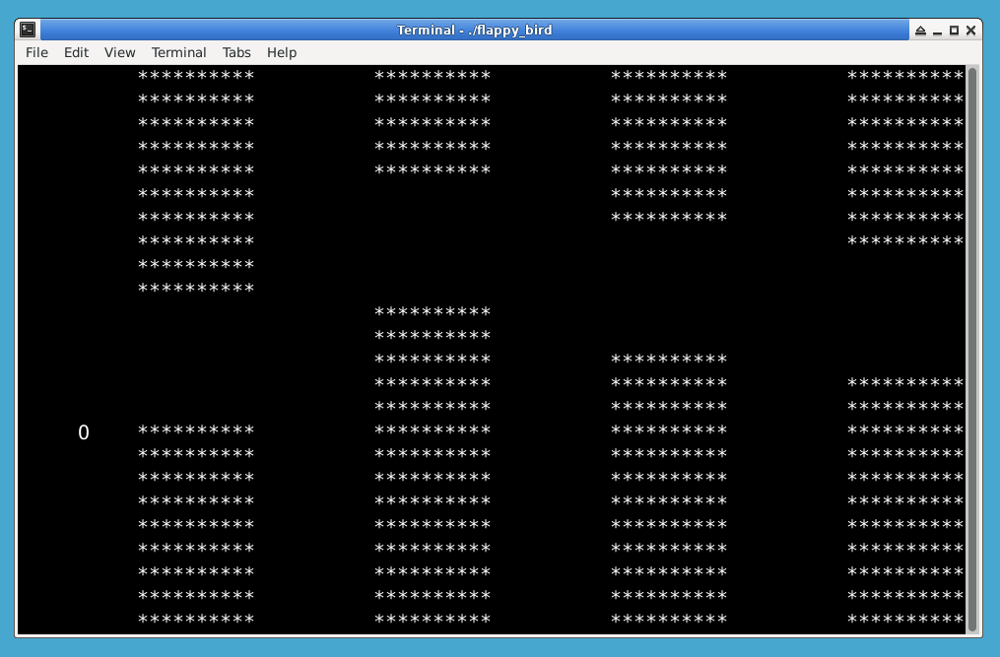
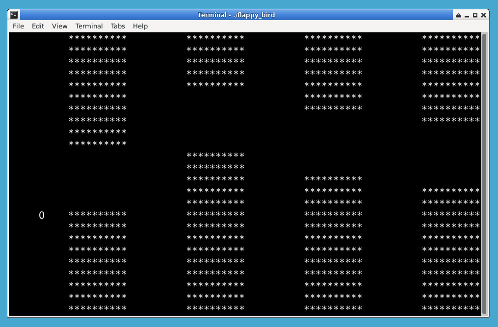
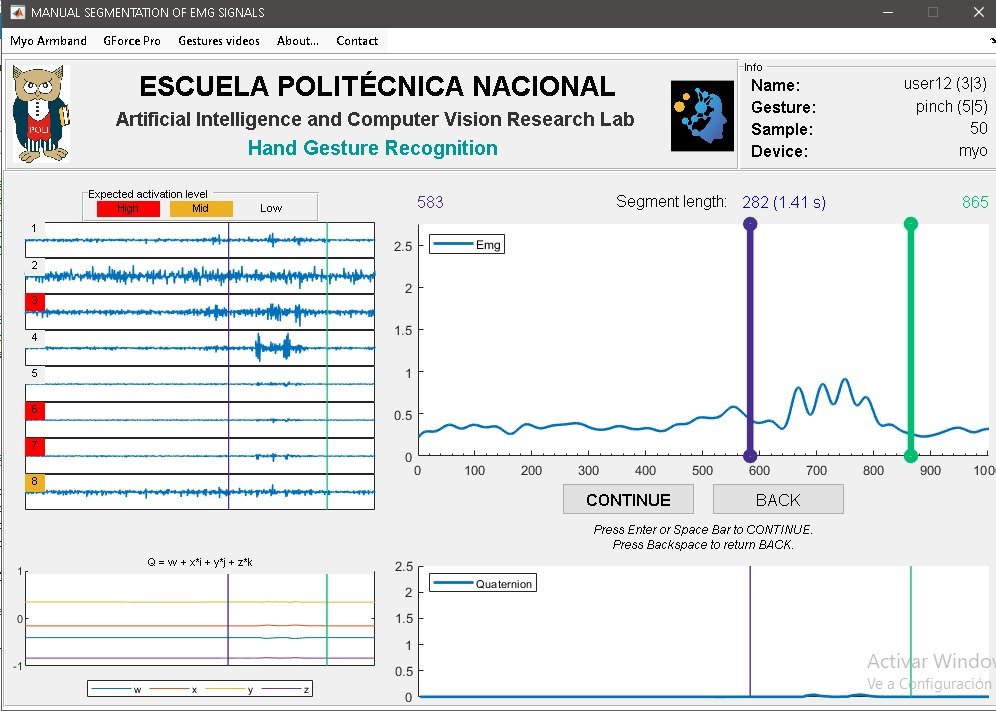
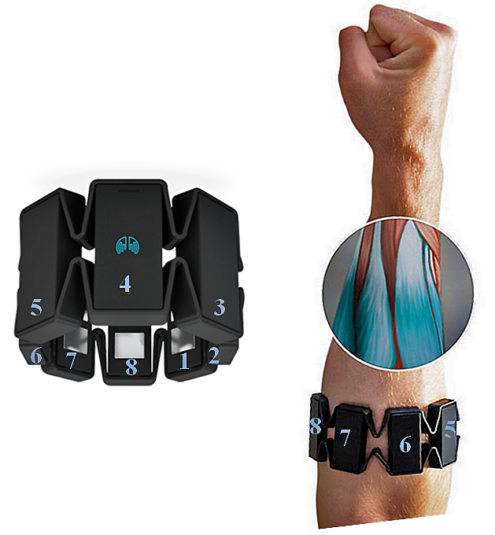

Proyectos Recientes
-
Proyecto 1: Ver en GitHub
Flappy Bird: Creación del videojuego Flappy Bird programado en C++. La estructura del juego incluye la implementación de un mapa generado con caracteres y un sistema básico de coordenadas para dibujar el personaje y los obstáculos Utilizando gráficos de consola, el código permite que el jugador controle el movimiento del ave dentro de los límites del espacio de juego, simulando el vuelo de Flappy Bird y permitiéndole esquivar obstáculos. Este proyecto demuestra el manejo de estructuras de datos simples y el control de pantalla en consola, haciendo uso de funciones específicas de Windows para el posicionamiento del cursor y la impresión en tiempo real. Es una excelente práctica en programación de gráficos en consola y en la lógica de los videojuegos
 

-
Proyecto 2: Ver en GitHub
Manual de Segmentación de Señales EMG," se ha desarrollado una interfaz gráfica que permite la segmentación manual de señales EMG recolectadas mediante el uso de un brazalete especializado, como el Myo Armband. Este sistema facilita la separación y clasificación de gestos y niveles de activación muscular en distintos usuarios. El proceso comienza con la adquisición de datos EMG, los cuales se integran en una base unificada. La interfaz también permite ajustar parámetros de configuración específicos a través de archivos de configuración, asegurando la compatibilidad con diferentes sesiones de grabación. Los datos segmentados se pueden exportar fácilmente para su uso en otras aplicaciones, lo que lo convierte en una herramienta poderosa para estudios en reconocimiento de gestos y análisis de señales EMG
  -
Proyecto 3: Ver en GitHub
Postulante para un trabajo de aplicacion app movil para un banco de alimentos en Quito